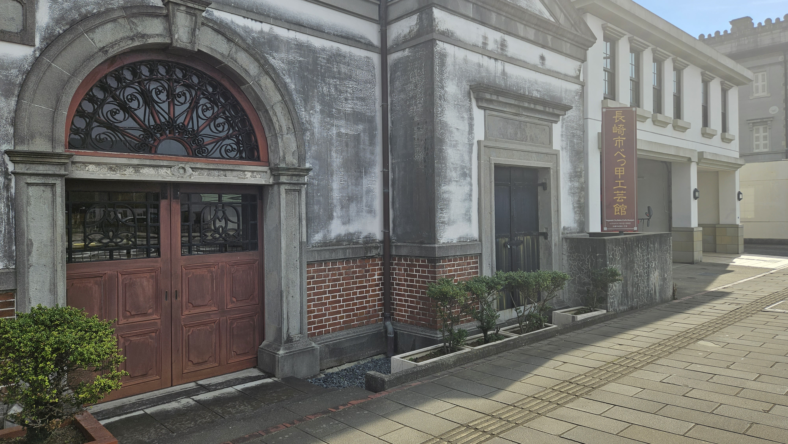

長崎市観光
時間: 8時〜17時
移動開始位置名: 松ヶ枝国際ターミナル
1つ目の場所: 長崎市旧香港上海銀行長崎支店記念館

特徴: 長崎近代交流史と孫文・梅屋庄吉ミュージアム
長崎の近代交流史を学べる貴重な場所です。
明治期の建築美と歴史的背景が息づく空間で、長崎の国際的な交流の歴史を感じることができます。
滞在時間:60分
2つ目の場所: 長崎市べっ甲工芸館（旧長崎税関下り松派出所）
特徴: 全国各地の貴重なべっ甲作品が大集合！
日本べっ甲協会から寄贈された300点を超えるべっ甲細工の貴重な作品を展示しており、長い歴史と伝統を感じることができます。
また、税関に関する資料の展示もあり、長崎の文化遺産を深く知ることができる場所です。
滞在時間:20分
3つ目の場所: 東山手洋風住宅群（7棟）

特徴: 市指定有形文化財・7棟の木造洋館群
明治時代後半に建てられ、質素ながらも趣のある木造洋館が密集する東山手洋風住宅群は、長崎の歴史を感じることができる貴重なスポットです。
現在、そのうちの6棟は町並み保存センターや資料館として、また国際交流の場としても利用されています。
滞在時間:20分
4つ目の場所: 東山手「地球館」café slow

特徴: 国際交流と地域・観光の新拠点～坂の途中で、ゆっくり・のんびり～
長崎市東山手町にある、国際交流と地域・観光の新拠点です。素材の味を生かす調理法や、なるべく添加物を使わず手作りを心がけた身体に優しいランチやスイーツなどが提供されています。また、窓からは周辺の景色を楽しむことができます。
滞在時間:60分
5つ目の場所: 長崎歴史文化博物館

特徴: 五感をつかって学ぼう！近世長崎の海外交流の歴史と文化
江戸時代からの海外交流の歴史を深く掘り下げ、その一端を復元した長崎奉行所で実際の裁判の寸劇を楽しむことができます。400年にわたる長崎の文化を約81,000点の貴重な資料と共に学び、国際交流の歴史を時代ごとの展示を通じて体験することができる博物館です。
滞在時間:60分
6つ目の場所: 長崎新地中華街

特徴: 日本三大中華街でグルメを堪能し、ショッピングを楽しもう！
日本の三大中華街のひとつで、中華料理店から中国のお菓子や雑貨店など約40軒の店舗が並んでいます。異国情緒にあふれる街並みを見ながら、食べ歩きを楽しむのがおすすめです。
滞在時間:60分
7つ目の場所: 出雲近隣公園
特徴: 色々な作品のロケ地にもなっている、長崎の眺望を楽しむ公園
出雲近隣公園は、歴史ある浄水場の跡地に建てられ、長崎港を見渡す絶好の景色を楽しめる癒しのスポットです。
滞在時間:40分
8つ目の場所: レトロ写真館
特徴: たくさんのレトロ衣装からお気に入りの1着を選んで写真撮影
グラバー園内にある写真スタジオです。ここでは、西洋風ドレスやアニメの衣装など、様々なレトロな衣装を着て写真撮影を楽しむことができます。撮った写真はSNSにアップしたり、長崎観光の思い出にしたりできます。
滞在時間:40分
9つ目の場所: 大浦天主堂

特徴: 世界の宗教史上に残る劇的な「信徒発見」の舞台
日本国内で最も古いゴシック様式の教会として、長崎の美しい洋風建築の象徴です。
キリシタン博物館としての役割も担い、その歴史の深さと美しさに触れることができます。
滞在時間:10分
10つ目の場所: 軍艦島デジタルミュージアム

特徴: 3D、VR、MRなど最新のデジタル技術であの頃の軍艦島にタイムスリップ！
長崎の軍艦島の歴史と文化を最新のデジタル技術を使って再現し、訪問者に感動的な体験を提供しています。
また、多様な展示やVR技術を通じて、かつての島の生活を独特の魅力で伝えています。
滞在時間:30分
11つ目の場所: 祈りの丘絵本美術館

特徴: 絵本の歴史とゆかりのある丘に
長崎の歴史的な丘に位置し、洋風瓦葺きの特色ある建物に囲まれ、絵本とその原画の世界を堪能できます。
美しい展示に加え、1万冊以上の厳選された絵本に囲まれながら、心地良い時間を過ごし、新しい発見と感動に満ちた経験ができます。
滞在時間:30分
到着:松ヶ枝国際ターミナル